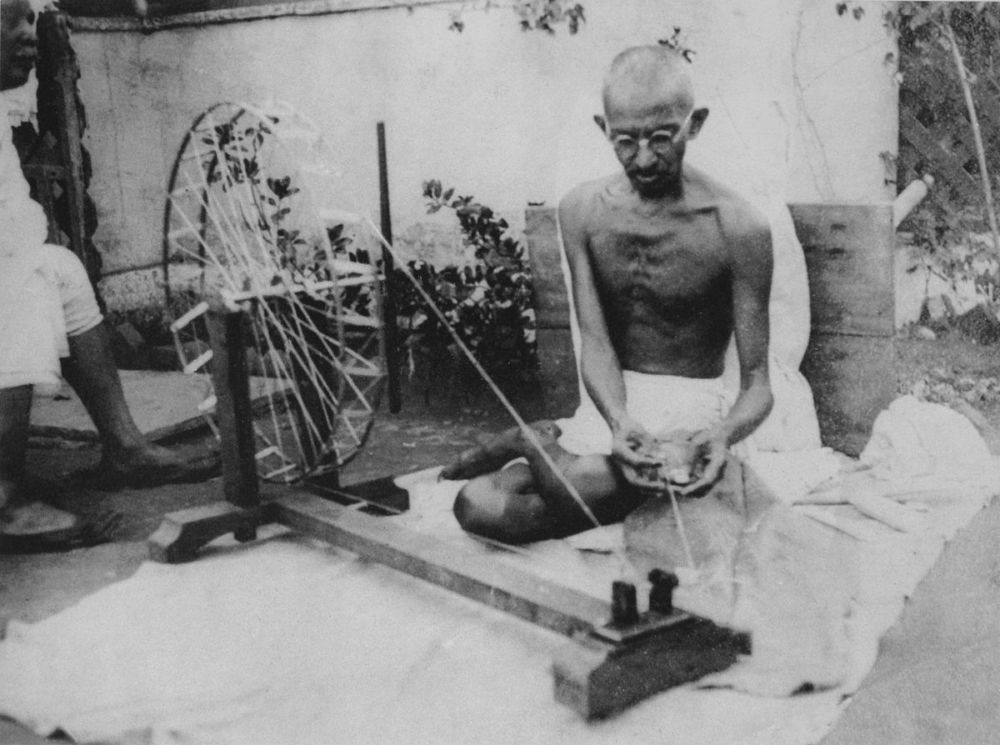

Gandhi believed in a simple life focused on self-reliance. He advocated for hand-spinning and the use of Khadi, handwoven cloth, as a means of empowering the people of India. [1-3]
Gandhi's philosophy of non-violence, Ahimsa, was central to his life and his method of Satyagraha, a form of non-violent resistance. He believed in truth and firmness and advocated for peaceful protests against injustice. [4-8]
Gandhi experimented with his diet, advocating for vegetarianism and even suggesting a diet solely of fruits and nuts. [9, 10] He also practiced Brahmacharya, self-restraint, particularly focusing on controlling passions and desires. [11-13]